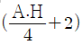
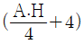
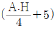
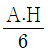
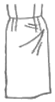
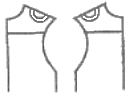
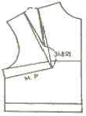

양장기능사 (2008-10-05 기출문제)
1과목: 임의 구분
1. 가봉시 유의해야 할 사항으로 옳은 것은?
- 바느질은 손바느질의 상침 시침으로 한다
- 바이어스감과 직선으로 재단된 옷감을 붙일 때는 바이어스감은 밑에 놓고 바느질한다.
- 실은 옷감과 동일한 소재의 실을 사용한다.
- 작은 조각 이외에는 반드시 재봉대 위에 펴 놓고 왼쪽에서 오른쪽으로 시침한다.
(정답률: 74%)

2. 단추 구멍을 만등 때 일반적으로 사용하는 스티치는?
- 백 스티치
- 러닝 스티치
- 패딩 스티치
- 버튼 홀 스티치
(정답률: 100%)
3. 다음 중 작업복에 적합한 소매산 높이는?




(정답률: 88%)
4. 하반신 굴신체의 보정방법이 아닌 것은?
- 뒤 다트 분량을 줄여 준다.
- 뒤 스커트 허리에 보조 다트를 넣는다.
- 뒷 중심을 올려 주고 허리선을 오그려 준다.
- 앞 중심을 파준다.
(정답률: 37%)
5. 기모노 슬리브의 일종이며 일반적으로 길이가 짧은 것으로 가련하고 경쾌한 느낌을 주며 어깨에 해방감을 주는 슬리브는?
- 래글런 슬리브
- 캡 슬리브
- 셔츠 슬리브
- 프렌치 슬리브
(정답률: 76%)
6. 다음 각 용어의 설명 중 옳은 것은?
- 의복-모자와 신발을 포함하여 인체의 각부를 덮는 것
- 의상-속옷과 겉옷의 총칭
- 복장-의복을 입어서 나타나는 전체적인 모습
- 피복-모자와 신발을 제외한 인체의 각부를 덮는 것
(정답률: 62%)
7. 오버 블라우스의 설명으로 가장 옳은 것은?
- Y셔프와 같은 블라우스
- 스커트나 슬랙스 위에 걸쳐 입는 블라우스
- 자수나 스모킹을 부분적으로 장식한 블라우스
- 블라우스 단을 안에 넣고 입는 블라우스
(정답률: 96%)
8. 다음 중 다림질할 때 다리미의 온도 조절과 관계가 없는 것은?
- 옷감의 가공 방법
- 옷감의 두께
- 수분의 유무
- 바느질의 방법
(정답률: 90%)
9. 너비 150cm 옷감으로 슬랙스를 만들려고 할 때 가장 적당한 옷감의 량은?
- 90~100cm
- 110~110cm
- 150~220cm
- 200~220cm
(정답률: 46%)
10. 계측 항목 중 둘레 항목에 관한 설명으로 틀린 것은?
- 가슴둘레는 선 자세에서 피 측정자가 자연스럽게 숨을 들이 마신 후 숨을 멈추었을 때, 좌우 유두점을 지나도록 하는 수평 둘레를 측정한다.
- 허리둘레는 앞쪽에서 보아 허리부분에서 가장 안쪽으로 들어간 위치에서의 수평 둘레는 측정한다.
- 앞품은 선 자세에서 오른쪽의 어깨 끝점과 앞 겨드랑이 점을 잇는 진동둘레선상의 가운데 지점과, 왼쪽의 어깨 끝점과 앞 겨드랑이점을 잇는 진동둘레선상의 가운데 지점 사이의 길이를 앞쪽에서 측정한다.
- 팔꿈치 둘레는 팔꿈치를 편 상태에서 팔꿈치 둘레를 측정한다.
(정답률: 60%)
11. 길(bodice)의 원형을 제작하려고 할 때 필요치수가 아닌 것은?
- 어깨너비
- 등길이
- 가슴둘레
- 소매길이
(정답률: 68%)
12. 다음 스커트의 그림이 생기는 원인으로 옳은 것은?

- 내가 나와서 배 부분이 낄 경우
- 편평한 배로 인하여 앞 스커트의 주름이 생길 경우
- 한쪽 엉덩이가 높거나 커서 한쪽이 당길 경우
- 뒤가 헐렁할 경우
(정답률: 79%)
13. 라펠, 칼라, 다트 등과 같이 옷감을 곡면으로 정형할 때 사용하는 다림질 보조 용구는?
- 둥근 다림질대
- 소매 다림질대
- 솔기 다림질대
- 니들 보드
(정답률: 90%)
14. 다음 중 기본 시접 분량이 가장 적은 부위는?
- 목둘레
- 옆선
- 어깨
- 스커트 단
(정답률: 96%)
15. 의복 제도 부호 중 다음의 의미는?

- 줄임
- 외주름
- 늘림
- 두 선을 맞춰서 재단
(정답률: 84%)
16. Kretschmer에 의한 체형분류방법에 속하지 않는 체형은?
- 비만형
- 투사형
- 세장형
- 내배엽형
(정답률: 34%)
17. 다음 중 보정 시 시침핀을 사용할 수 있는 옷감은?
- 가죽 재킷
- 모피 조끼
- 우단 원피스
- 폴리에스테르 혼방 유니폼
(정답률: 87%)
18. 스커트 길이에 따른 명칭 중 스커트 끝자락이 무릎과 발사이의 중간 정도에 위치하는 길이를 가리키는 것은?
- 롱(long)
- 미니(mini)
- 미디(midi)
- 맥시(maxi)
(정답률: 86%)
19. 제도시 사용되는 약자 중 C.F.L은?
- 앞중심성
- 뒷중심선
- 가슴둘레선
- 허리둘레선
(정답률: 87%)
20. 두 장의 직물에 패턴의 완성선을 표시하기 위해 사용하는 손바느질 방법은?
- 시침질
- 박음질
- 실표뜨기
- 휘감치기
(정답률: 100%)
2과목: 임의 구분
21. 칼라 끝이나 옷솔기에 끼워 장식하는 바느질법은?
- 바이어스
- 파이핑
- 셔링
- 턱킹
(정답률: 92%)
22. 옷감과 패턴의 배치 설명으로 옳은 것은?
- 짧은 털이 있는 직물은 털의 결 방향에 신경 쓰지 않고 패턴을 배치한다.
- 털이 긴 청모직물은 털방향이 위로 향하도록 배치한다.
- 체크무늬나 줄무늬는 옷감 정리에서 줄을 바르게 정리한 다음 무늬를 맞춰 배치한다.
- 옷감의 안과 안이 마주보도록 접은 다음 옷감의 겉쪽에 패턴을 패치한다.
(정답률: 95%)
23. 다음 중 단추와 단추 구멍에 대한 설명으로 옳은 것은?
- 여자 옷의 단추 구멍은 앞길에서 왼쪽에 뚫는다.
- 남자옷의 단추 구멍은 뒷길에서 오른쪽에 뚫는다.
- 단추 구멍에는 실 단추 구멍만이 있다.
- 단추가 배열되는 중심선은 바느질 후에 표시해야 한다.
(정답률: 40%)
24. 다음 중 스커트원형 제도시 필요한 항목은?
- 허리 둘레, 스커트 길이, 엉덩이 길이, 다트 길이
- 다트 길이, 엉덩이 둘레, 밑위 길이, 스커트 길이
- 허리 둘레, 엉덩이 둘레, 밑위 길이, 스커트 길이
- 허리 둘레, 엉덩이 둘레, 엉덩이 길이, 스커트 길이
(정답률: 97%)
25. 모직물의 다림질에 가장 적당한 온도는?
- 80~100℃
- 100~120℃
- 120~150℃
- 150~180℃
(정답률: 40%)
26. 다음 그림과 같은 다트는?

- 암 홀 다트(arm hole dart)
- 숄더 다트(shoulder dart)
- 네크라인 다트(neckline dart)
- 웨이스트 다트(waist dart)
(정답률: 93%)
27. 봉사의 소요량 산출 요인 중 직접적인 요인이 아닌 것은?
- 천의 두께
- 스티치의 길이
- 봉사의 굵기
- 작업자의 작업방식
(정답률: 81%)
28. 상체가 곧고 가슴이 높게 솟아 있으며 엉덩이는 풍만하고 배가 평편한 체형은?
- 반신체
- 굴신체
- 비만체
- 후경체
(정답률: 86%)
29. 의복 원형의 3가지 기본요소는?
- 길, 소매, 스커트
- 길, 칼라, 슬랙스
- 재킷, 바지, 스커트
- 뒤판, 스커트, 슬랙스
(정답률: 85%)
30. 세탁을 자주 해야 하는 운동복, 아동복 등에 많이 이용되는 바느질 방법은?
- 가름솔
- 쌈솔
- 평솔
- 뉜솔
(정답률: 90%)
31. 섬유의 단위섬도에 대한 절단하중으로 나타내는 값은?
- 비중
- 강도
- 탄성도
- 신도
(정답률: 84%)
32. 면 섬유에 포합성을 주는 것과 관계가 있는 것은?
- 결절(node)
- 겉비늘(scale)
- 피브로인(fibroin)
- 천연꼬임(natural twist)
(정답률: 96%)
33. 다음 중 열가소성을 이용하여 주름을 잡아 가열하면서 눌러 주어 주름고정(pleats setting)을 하기가 가장 좋은 직물은?
- 폴리에스테르
- 견
- 비스코스레이온
- 아크릴
(정답률: 66%)
34. 다음 중 산에 가장 약한 섬유는?
- 모
- 면
- 견
- 폴리에스테르
(정답률: 40%)
35. 다음 중 안동포의 주원료는?
- 대마
- 저마
- 아마
- 황마
(정답률: 53%)
36. 나일론 66의 용융점에 해당되는 것은?
- 150℃
- 215℃
- 250℃
- 300℃
(정답률: 44%)
37. 견 섬유는 어느 염료와 친화력이 가장 좋은가?
- 산성 염료
- 배트 염료
- 분산 염료
- 황화 염료
(정답률: 74%)
38. 다음 작물 중 세탁 후 가장 빨리 건조되는 것은?
- 면
- 비스코스레이온
- 견
- 폴리에스테르
(정답률: 40%)
39. 다음 화학섬유 중 셀룰로스 섬유를 원료로 하지 않는 것은?
- 비스코스레이온
- 구리암모늄레이온
- 카세인
- 트리아세테이트
(정답률: 44%)
40. 다음 천연 서유 중 필라멘트 섬유는?
- 면
- 마
- 모
- 견
(정답률: 87%)
3과목: 임의 구분
41. 청록을 빨강 바탕 위에 놓았을 때 다른 색 위에 놓았을 때보다 청록이 더욱 뚜렷하고 강하게 나타나는 대비는?
- 명도 대비
- 채도 대비
- 색상 대비
- 보색 대비
(정답률: 67%)
42. 배색의 효과 중 단계적으로 변화하거나 이행하는 것은?
- 분리(separation)
- 점이(gradation)
- 악센트(accent)
- 주도(dominant)
(정답률: 72%)
43. 색의 연상에 관한 설명으로 틀린 것은?
- 색을 보는 사람의 경험과 기억, 지식 등에 영향을 받는다.
- 색을 보는 사람의 민족성이나 나이, 성별에는 영향을 받지 않는다.
- 지역적으로 공통성과 전통이 다르면 어떤 관습이 생겨 지역이나 민족에 따라 특수한 것으로 고착된다.
- 색의 연상에는 구체적 연상과 추상적 연상이 있다.
(정답률: 90%)
44. 의복에 있어 통일감을 주기 위한 방법 중 틀린 것은?
- 색상조화에 있어 채도를 통일시킨다.
- 의복의 문양은 체크문양보다 꽃 문양을 이용하여 경쾌한 인상을 준다.
- 주 색상을 뚜렷한 것으로 하여 대비 색상의 이미지를 통일시킨다.
- 서로 온도감이 유사한 색상끼리 이용하여 전체적인 분위기를 통일시킨다.
(정답률: 85%)
45. 다음 중 채도가 가장 높은 색은?
- 청록
- 연두
- 파랑
- 빨강
(정답률: 80%)
46. 먼셀 표색계에 따라 5R 4/14로 표시된 색채에서 4가 나타내는 속성은?
- 색상
- 명도
- 채도
- 색입체
(정답률: 64%)
47. 뚱뚱한 체형의 사람에게 어울리는 의복의 설명으로 옳은 것은?
- 저명도 색으로 어두운 계통의 의복을 입는다.
- 엷은 색을 주색체로 사용하는 것이 좋다.
- 팽창색을 이용한다.
- 큰 무늬 옷감을 이용한다.
(정답률: 89%)
48. 다음 중 디자인의 기본 형태가 아닌 것은?
- 점
- 선
- 면
- 색
(정답률: 87%)
49. 색의 심리적인 현상 중 신비, 고독, 조용 등을 연상하게 하는 색상은?
- 빨강
- 초록
- 파랑
- 보라
(정답률: 87%)
50. 다음 중 우리 눈에 가장 먼저 받아들여지는 색은?
- 빨강
- 노랑
- 초록
- 파랑
(정답률: 72%)
51. 다음 중 실을 이용하지 않고 만드는 피복은?
- 브레이드
- 편성물
- 페트
- 레이스
(정답률: 53%)
52. 열전도성이 큰 섬유를 사용하는 것이 가장 적합한 계절은?
- 봄
- 여름
- 가을
- 겨울
(정답률: 85%)
53. 형태고정가공과 관계가 없는 것은?
- S.R(soil release) 가공
- W & W(wash & wear) 가공
- D.P(durable press) 가공
- P.P(permanent press) 가공
(정답률: 70%)
54. 주자직물의 특징이 아닌 것은?
- 조직점이 적어 유연하다.
- 표면이 매끄럽고 광택이 좋다.
- 직물의 표면과 이면이 같다.
- 대표적인 직물은 목공단이다.
(정답률: 77%)
55. 다음 중 능직으로 제작된 직물은?
- 서지(serge)
- 도스킨(doeskin)
- 포폴린(poplin)
- 태피터(taffeta)
(정답률: 84%)
56. 펠트의 특징으로 틀린 것은?
- 가장자리가 잘 풀리지 않는다.
- 흡수성이 좋다.
- 다른 직물만큼 강하지 않다.
- 뻣뻣하나 굴곡성은 있다.
(정답률: 46%)
57. 의복 관리에 있어서 직물의 성능을 저하시키는 요인이 아닌 것은?
- 체온으로 인한 강도저하
- 보관으로 인한 변질
- 세탁으로 인한 섬유의 손상
- 땀에 의한 섬유의 취화
(정답률: 89%)
58. 각 섬유에 사용하는 표백제를 바르게 연결한 것은?
- 셀룰로스-차아염소산나트륨
- 나일론-아황산
- 견-아염소산나트륨
- 아크릴-하이드로술파이트
(정답률: 50%)
59. 피복재료로 사용되는 섬유의 염색성에 대한 설명 중 틀린 것은?
- 섬유의 화학적 조성에 따라 염색성이 달라진다.
- 섬유내 결정 부분이 많은 섬유가 염색성이 좋다.
- 흡승성이 좋은 섬유가 일반적으로 염색성이 좋다.
- 염료와 친화성이 큰 원자단을 갖고 있는 섬유가 염색성이 좋다.
(정답률: 55%)
60. 싱글 저지에 대한 설명으로 틀린 것은?
- 비교적 빠른 위편성법이다.
- 표면과 이면이 같은 외관이다.
- 가장자리가 말리는(curl) 경향이 있다.
- 표면에 선명한 웨일(wale)이 있다.
(정답률: 32%)